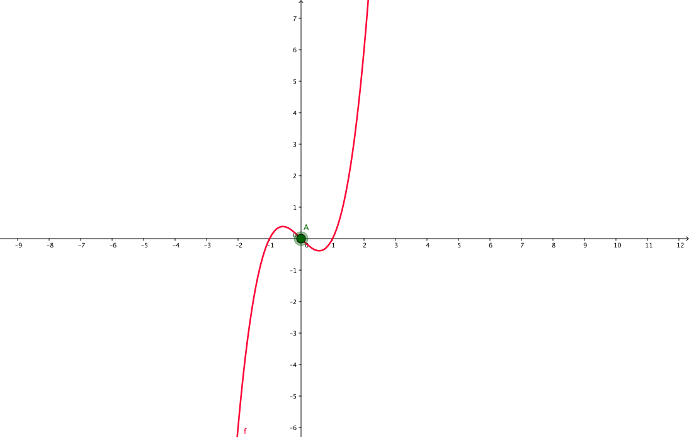
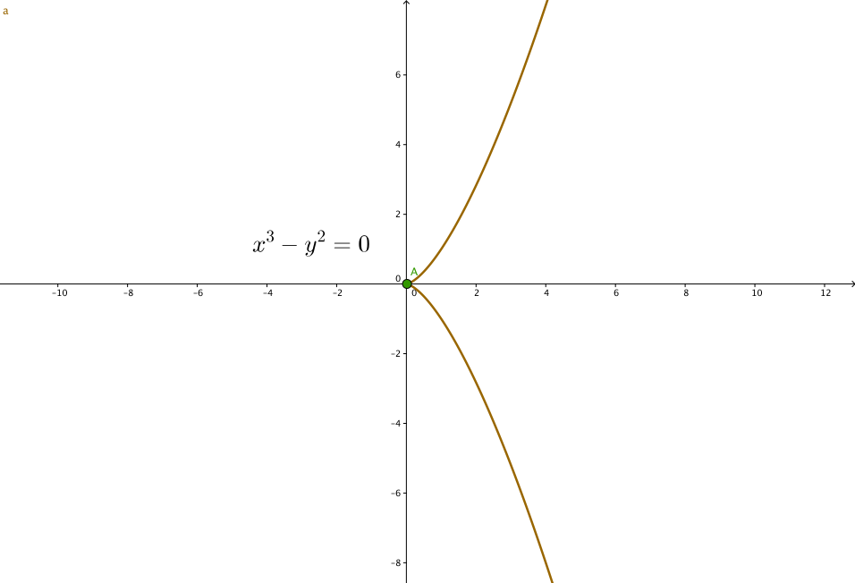

$\quad f(x) = x^3 - x$ has three real roots
$\quad f(x) = x(x - 1)(x + 1)$
$\quad \Rightarrow x \in \{-1, 0, 1\}$
$\quad \frac{df}{dx} = 2x^2 - 1 = 0$
$\quad \Rightarrow x = \pm \sqrt{\frac{1}{2}}$
$\quad \text{There are max/min values:}\quad \large \mathit{f}(\sqrt{\frac{1}{2}}),\quad \mathit{f}(-\sqrt{\frac{1}{2}})$

\begin{equation} \begin{aligned} f(x, y) &= x^3 + y^2 \\ (\frac{\partial f}{\partial x}, \frac{\partial f}{\partial y}) &= (2x^2, 2y) \\ (2x^2, 2y) &= (0, 0) \quad \text{ when } \quad x=0, y=0 \end{aligned} \end{equation} 
\begin{equation} \begin{aligned} f(x, y) &= x^3 + x^2 - y^2 \\ (\frac{\partial f}{\partial x}, \frac{\partial f}{\partial y}) &= (3x^2 + 2x, -2y) \\ (3x^2 + 2x, 2y) &= (0, 0) \quad \text{ when } \quad x=0, y=0 \end{aligned} \end{equation}